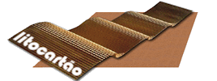
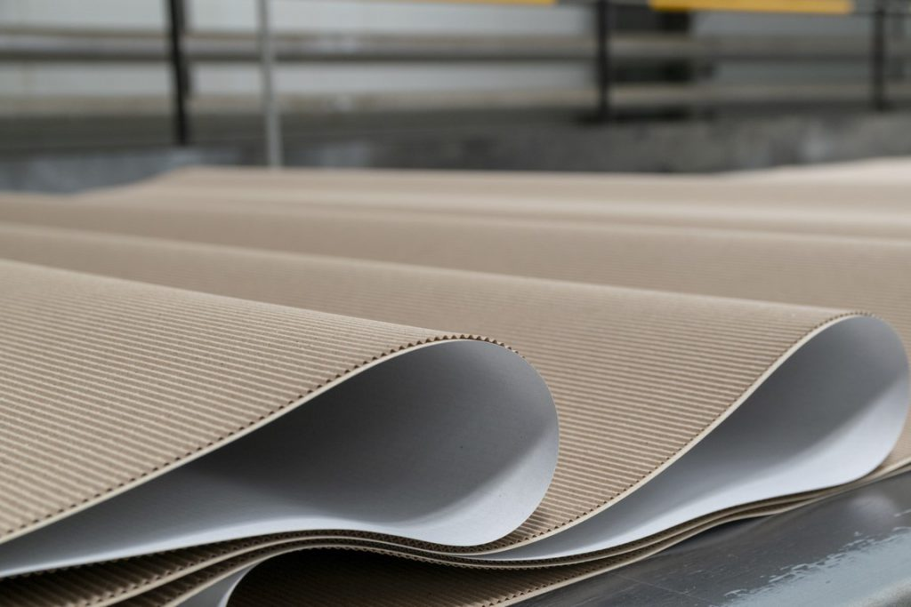
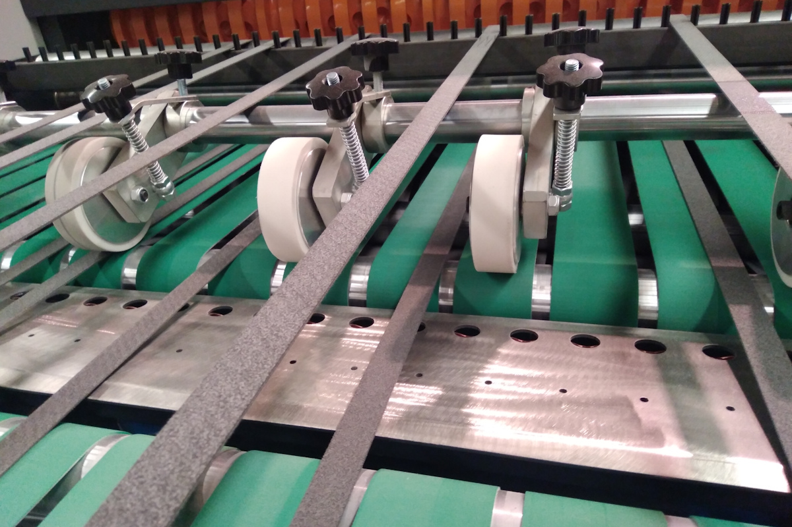
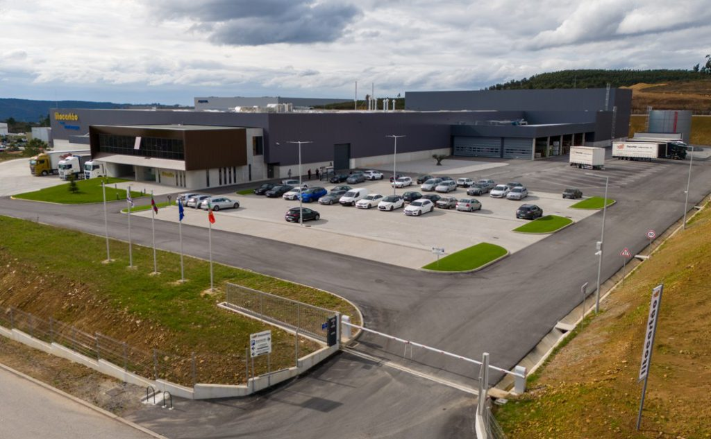

Corte
Corte de bobines em folhas e corte de cartão, com material fornecido pelo cliente ou pela Litocartão.

Litocartão · Cartão canelado
Cartão canelado simples face, em bobines ou formatos. Conheça os produtos e os serviços de transformação.
Explorar os produtos
01 / Produtos
A Litocartão apresenta caneluras B, E, F e N, em diferentes gramagens e qualidades de papel. As opções abaixo ajudam a organizar uma conversa sobre o pedido.
Escolha a designação que pretende explorar. Se ainda não sabe qual indicar, deixe essa escolha por definir.
A seleção não é uma recomendação técnica. A aplicação, as medidas e as características do cartão teriam de ser confirmadas com a equipa.
02 / Serviços
Do corte à contracolagem, apresente o trabalho pretendido e a informação de que já dispõe.

Corte de bobines em folhas e corte de cartão, com material fornecido pelo cliente ou pela Litocartão.
Contracolagem simples ou dupla de cartolina impressa fornecida pelo cliente, em processos de folha a folha ou de bobine a folha.
Pode indicar um serviço no resumo, ou deixá-lo por definir.
03 / A fábrica
A Litocartão apresenta as suas instalações em Baltar. O cartão, os equipamentos e o espaço de produção ajudam a situar os produtos e serviços.
Conhecer a empresa no site oficial
04 / Organizar um pedido
A aplicação prevista e a informação disponível podem acompanhar a primeira conversa com a equipa.
Não são recolhidos contactos. As opções não confirmam uma especificação, orçamento, disponibilidade ou prazo de produção.
Resumo local · nada foi enviado
A equipa teria de validar a solução e as condições do pedido.Uma proposta de Ricardo Almeida
O site já apresenta os produtos, os serviços e as instalações. Preparei uma forma de ligar essa informação às escolhas de quem está a iniciar um pedido.
Reuni as caneluras, as apresentações e os serviços num percurso. A pessoa pode registar o que pretende e deixar por definir aquilo que precisa de confirmar com a equipa.
Proponho filmar uma operação autorizada, acompanhando o trabalho da equipa e juntando uma explicação curta. Colocaria o filme junto do serviço correspondente, para que o visitante veja o que está a ler. Ainda não existe um filme produzido por mim para a Litocartão.
O resumo reúne produto, apresentação, serviço e aplicação prevista. Serve para mostrar como a informação poderia acompanhar o contacto; esta demonstração não envia nem guarda dados.
Um exemplo do meu trabalho
Na Canvas Custom Furniture, filmei e editei a produção e integrei o filme no website. Deixei o projeto como exemplo da ligação entre o trabalho filmado e a apresentação da empresa.
Ver o projeto CanvasRicardo Almeida · Vídeo e websites